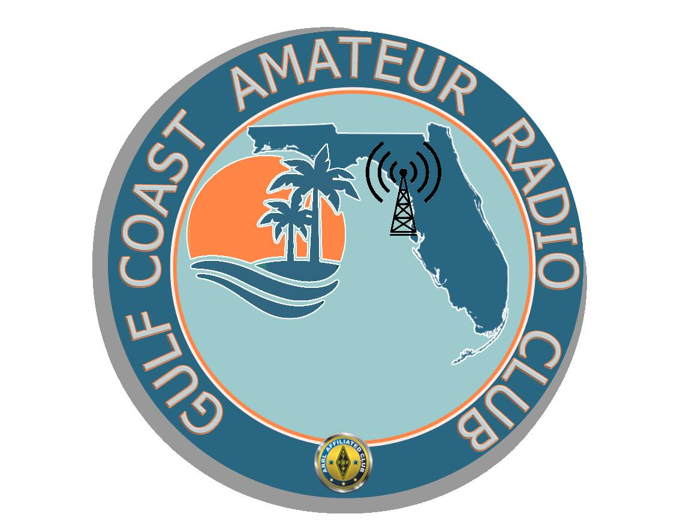
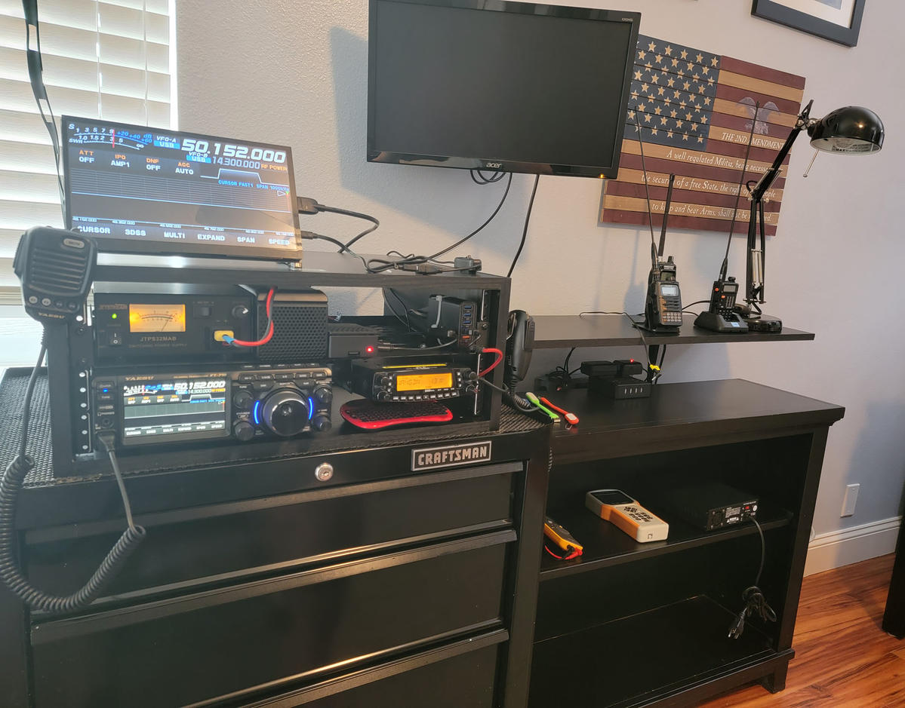

⌁
Station & Gear
Radios, antennas, batteries, logging and the equipment I carry into the field.
Explore the gear →PARKS ON THE AIR • K5KAZ
Portable amateur radio from parks and public lands. Follow my activations, explore the parks I've worked, and see the station that goes into the field.
Explore my activations →A record of K5KAZ POTA activations imported from the supplied activation log.
| Date | Park | Name | State | QSOs |
|---|
FIELD LOG
My complete activation history, awards, and current POTA activity are available directly on my POTA profile.
View My POTA Profile →The parks below are the POTA locations you've provided for K5KAZ. Select a park to open its official POTA park page.
Loading park locations from POTA…
Detailed park information and current POTA status are maintained by Parks on the Air. Open POTA Map →
Radios, antennas, batteries, logging and the equipment I carry into the field.
Explore the gear →PARKS ON THE AIR
Every activation is a chance to get outside, make contacts, and enjoy the hobby from somewhere new.
From the home station to portable POTA operations, this is the equipment I use to get on the air.
Originally from Boston, MA, I moved to Hudson, FL in 2013.
I retired from Verizon Communications, formerly New England Telephone, after 36 years.
I earned my Amateur Radio Technician license in April 2022, upgraded to General in September 2022, and upgraded to Extra in September 2026.
I joined the Gulf Coast Amateur Radio Club (GCARC) in June 2022.
View My QRZ Page →

The home station is where I spend time operating, experimenting, and preparing for the next outing.

Portable operation is a big part of my ham-radio activity, especially getting out into parks and making contacts from the field.

A mobile setup gives me another way to stay active on the air while traveling between locations.